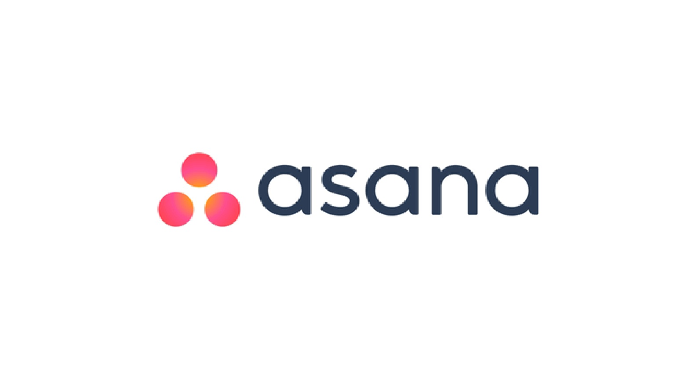

Asana: Planificación seria para equipos ambiciosos
Asana va un paso más allá de Trello. Es una plataforma robusta que permite mapear cada detalle de un proyecto. Nos gusta mucho cómo gestiona las dependencias de tareas, lo cual es vital en entregas complejas.
Ver comparativa